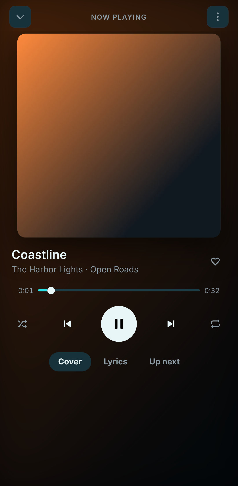
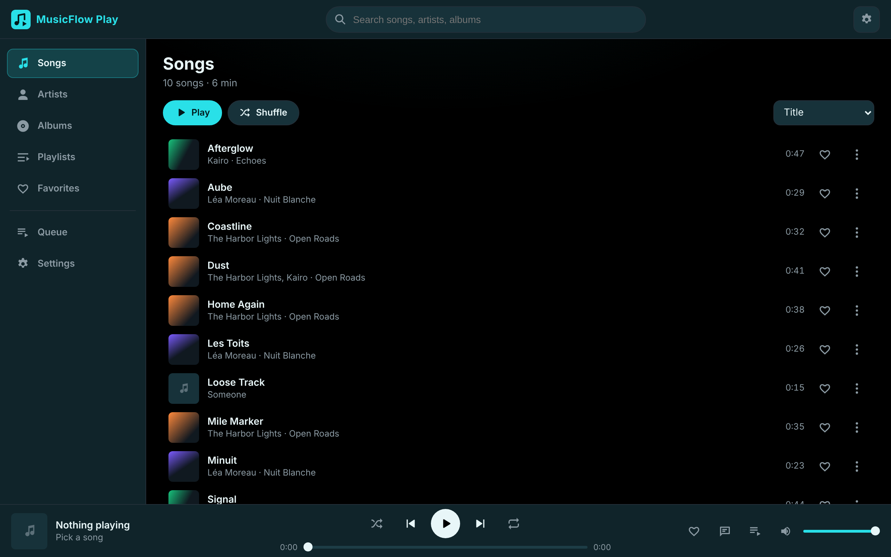
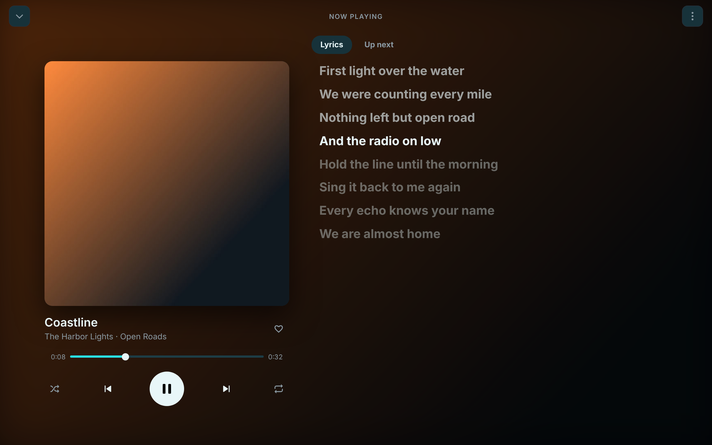
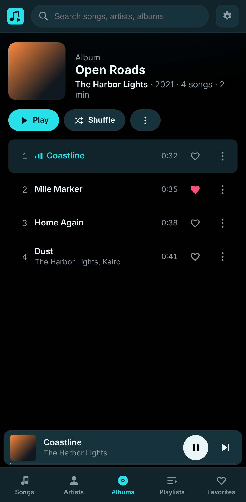

Tunedrift plays the songs on your phone or PC with cover art, lyrics that follow the music, karaoke, car mode and Android Auto. Free, open source, no account and no ads.
Latest version · Free · open source (GPL-3.0) · Android 8+ (64-bit) and Windows 10/11

Plays the songs in your folders: MP3, FLAC, M4A/AAC, Opus, OGG, WAV. Songs, artists and albums, subfolders included.
Lyrics that follow the song (.lrc or tags), full-screen lyrics, tap a line to jump. Missing lyrics are found online.
Lowers the singer's voice so you can sing along, right from the lyrics screen.
Big cover, big buttons, swipe for next. Tunedrift also shows in Android Auto, with voice search.
From a Spotify or YouTube link or account, from your computer over Wi-Fi, or from a file. Nothing is downloaded twice.
Song of the day, Discover for you, and the music goes on with similar songs when the queue ends.
Five home-screen widgets, lock-screen and headphone controls, playback in the background.
Fix titles, artists and albums, find the right album online from its track list.
Your playlists, favorites, ratings and backups that move with you to a new phone.



Tunedrift.apk.Tunedrift.exe.